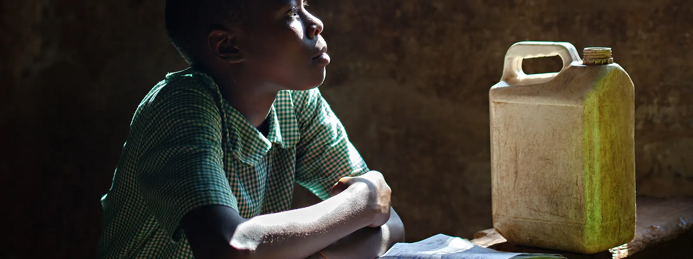
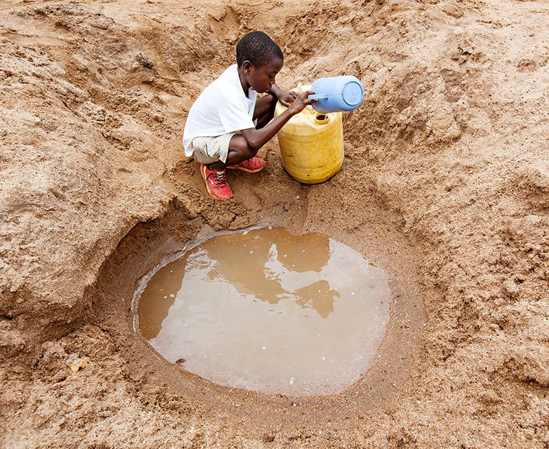
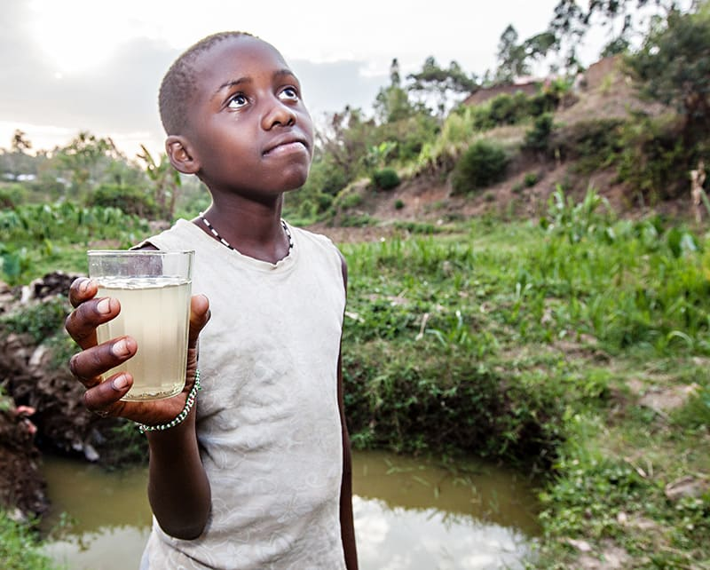

Restore hope that ripples out for years to come.
Globally, 1 in 9 people still have no access to clean water. But in the communities we serve, it's 9 out of 9. Water is a daily and crippling challenge. Without water you can't grow food, you can't build housing, you can't stay healthy, you can't stay in school and you can't keep working.
Today, hope is on hold in over half of the developing world's primary schools without access to water and sanitation.
But the water crisis can be solved.

Children often bear the burden of walking miles
each day to find water in streams and ponds, full of water-borne disease that is making them and their
families sick.Illness and the time lost fetching it robs entire communities of their futures.
Girls under the age of 15 are twice as likely as boys to be the family member responsible for fetching water. We believe she deserves to take water for granted, just like you. To pursue a hopeful future, she needs water - every day.

Access to Clean Water Improves...

Education
With water right on school property, students won’t miss class to quench their thirst, clean their classrooms, or supply school
kitchens with water. With water at home, kids don’t waste homework time walking long distances in search of water
for their households.

Health
Water projects close to home rescue people from drinking whatever dirty water they can find. More water also means less rationing,
so it’s easier to stay hydrated, wash hands, and clean homes, preventing future illnesses.

Hunger
In our service areas, almost everyone has a farm or garden. To
them, a lack of water means a lack of food. Improved crop
irrigation equates to healthier and more plentiful crops.

Poverty
Sourcing water when it’s scarce day after day saps everyone’s time and energy. With water at their fingertips, people spend more time investing in their households and livelihoods.